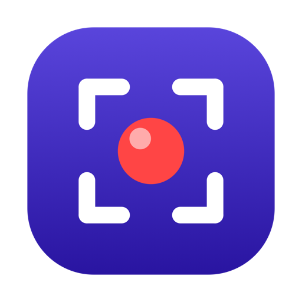
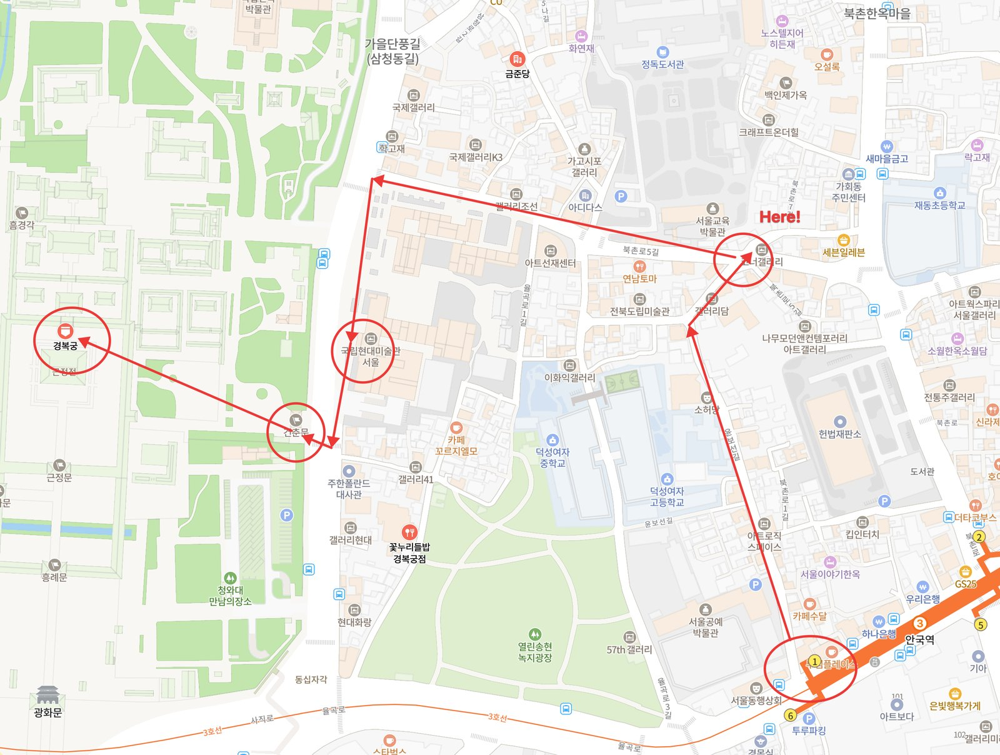
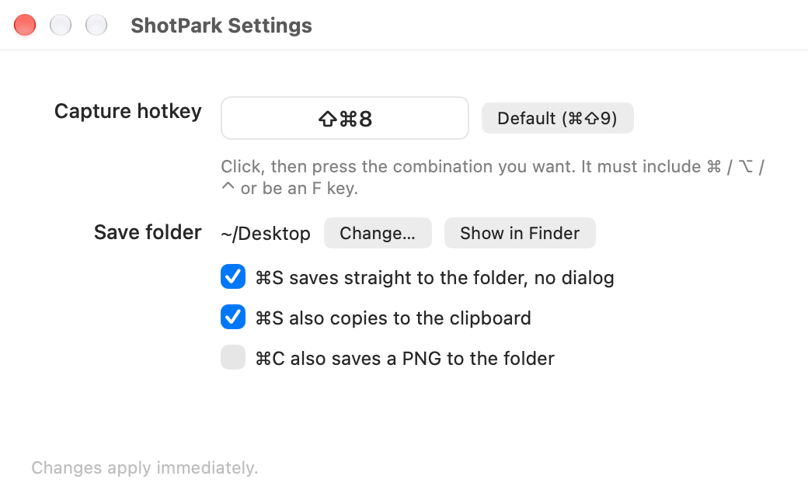

ShotParkA Lightshot alternative for Mac. One hotkey to select a region, annotate it on the spot, and copy, save or share it.
Native Apple Silicon, zero dependencies, lives quietly in the menu bar.

Real output from ShotPark. Press ⌘⇧9, drag over the map, drop in a few circles, arrows and labels, hit ⌘C — done.
Lightshot set the bar for quick screenshots: press a key, drag a box, scribble on it, copy. The problem is that its Mac app is an Intel-only build, so on Apple Silicon it has to run through Rosetta — if it runs at all. ShotPark keeps that exact workflow and rebuilds it natively for modern Macs with Swift and AppKit, with nothing phoning home.
Hotkey → drag → annotate → ⌘C. If you used Lightshot, you already know how ShotPark works. The overlay appears in well under 100 ms.
Native arm64 binary using ScreenCaptureKit. No Rosetta, no Electron, no Java — a 10-file Swift app with zero third-party libraries.
Lightshot's "upload to prnt.sc" button is intentionally absent. Captures go to your clipboard, your folder, or the app you pick. Nothing leaves the machine.
Everything Lightshot had plus multi-line text with shadow / outline / background box, numbered stamps, emoji stamps, movable and editable annotations, undo and redo.
Default ⌘⇧9. The screen dims; drag to select a region or click a window to grab it whole. Resize with handles, move by dragging inside, nudge 1 px with the arrow keys. Pixel dimensions are shown live.
Pen · line · arrow · rectangle · ellipse · marker · multi-line text · numbered stamps · emoji stamps, a 10-color palette, 3 stroke widths, undo/redo. Drag any annotation to move it, Delete to remove it. Text has 3 size presets plus free entry and togglable shadow, outline and background box. What you see is exactly what gets exported.
⌘C to the clipboard, ⌘S straight to your chosen folder as PNG, ⌘⇧S to Claude · Slack · KakaoTalk or the macOS share sheet.
ScreenCaptureKit captures every display at its true resolution. Works the same with one monitor or five.
Change the capture hotkey, the save folder and the save/copy behaviour in the settings window. Optional launch at login. UI in English or Korean, following your macOS language.
10 Swift/AppKit files, 0 external libraries. No Dock icon — menu bar only. Never uploads anything.

Settings (⌘,). Click the hotkey box and press the combination you want; it applies immediately. Save folder, direct save and save↔copy linking live here too. The app follows your macOS language (English or Korean).
| Action | Keys |
|---|---|
| Start a region capture | ⌘⇧9 (changeable in settings) · menu bar icon |
| Select the whole screen | ⌘A |
| Pen / line / arrow / rectangle / ellipse / marker / text / number / emoji | P L A R E M T N S |
| New line while typing text | ⇧↩ |
| Select (move / resize) mode | V or click the active tool again |
| Copy to clipboard and close | ⌘C or Enter |
| Save as PNG | ⌘S |
| Share menu | ⌘⇧S |
| Grab a whole window | Click the window instead of dragging |
| Nudge the region / selected annotation | Arrow keys (⇧ for 10 px) |
| Move / delete / re-edit an annotation | Drag / Delete / double-click (select tool) |
| Redo | ⌘⇧Z |
| Bigger / smaller text (text tool) | ⌘+ / ⌘- |
| Undo | ⌘Z |
| Cancel | Esc · right-click |
1) CLI — downloads the latest release → Applications → clears the quarantine flag → launches:
curl -fsSL https://shotpark.site/install.sh | sh2) Homebrew
brew install --cask chiyodad/tap/shotpark3) Download — grab ShotPark-x.y.z.zip from the latest release, unzip it and move ShotPark.app into your Applications folder.
Only if you installed via 3) Download. The 1) CLI and 2) Homebrew installs handle this automatically — skip this step.
ShotPark is an open-source app without an Apple Developer signature, so the first launch is blocked as coming from an "unidentified developer". Use either method once; macOS won't ask again.
Method A — one line in Terminal (most reliable):
xattr -d com.apple.quarantine /Applications/ShotPark.appMethod B — allow in settings: double-click the app once more to dismiss the warning, then open System Settings → Privacy & Security, scroll to the bottom and click "Open Anyway".
On your first capture (⌘⇧9) macOS asks for Screen Recording permission. Here is what you'll see, in order:
① A system dialog titled Screen Recording: "ShotPark.app would like to record this computer's screen and audio", with Open System Settings and Deny buttons.
② In System Settings → Privacy & Security → Screen & System Audio Recording, a list of apps with toggles — turn on the ShotPark.app row.
③ Quit ShotPark from the menu bar icon and open it again. The dialog won't appear again for this build.
Building from source skips step 2. All you need is the Xcode Command Line Tools.
git clone https://github.com/chiyodad/shotpark.git
cd shotpark
./build.sh --installScreen Recording permission hasn't been granted yet. Menu bar icon → "Screen Recording permission…", enable ShotPark and relaunch the app. If another app already owns the same global hotkey, change the combination in settings.
That's the quarantine flag attached to downloaded files. Clear it with xattr -d com.apple.quarantine /Applications/ShotPark.app from step 2.
Expected. A new build with a different signature is treated by macOS as a new app, so it asks once more. Enable it and relaunch.
The image is copied to the clipboard and the file is handed to the app. Apps that accept files (like Slack) open their upload sheet immediately; apps that don't are simply brought to the front, so just paste with ⌘V.
The release binary is Apple Silicon only. Remove --arch arm64 from build.sh and build it yourself to run on Intel.
No, and that's deliberate. Everything stays on your machine; sharing goes through the clipboard, files or the macOS share sheet only.
Yes. Menus, settings, tooltips and messages follow your macOS language: English by default, Korean when Korean is your primary language. You can also pick a per-app language under System Settings → General → Language & Region → Applications.